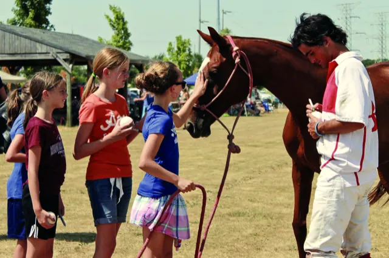
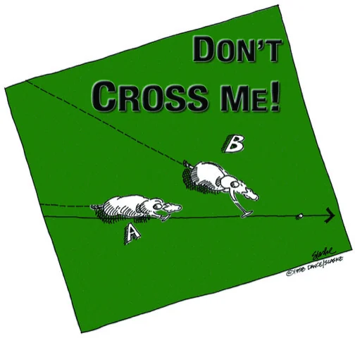

What is polo? Polo rules explained from the sideline
Horse polo is eight riders, one small ball and a lot of noise. Once you know four things (the team, the field, the clock and the one rule everyone watches), the chaos turns into a game you can follow.
Polo positions: what numbers 1 to 4 do
Each team has four riders, numbered 1 to 4 on their shirts. Number 1 is the attacker, living near the other team’s goal. Number 4, called the back, defends. Number 3 is usually the strongest player on the team and runs the play from the middle. Number 2 does the hard work in between.
You score by hitting the ball between the opponent’s goal posts, at any height. After every goal the teams switch ends, so neither side keeps the wind or the better ground for long.
The polo field: the biggest in organised sport
A full polo field runs up to 300 yards long and 160 wide, about the size of nine American football fields. The goal posts are eight yards apart, with no crossbar.
What is a chukker in polo?
A match is split into periods called chukkers, each about seven minutes long. Club matches often play four; the top level plays six. Between chukkers the riders change horses, which is why a single player may bring several ponies to one game.
At halftime the crowd walks onto the field to stamp the torn-up turf back into place. That’s the divot stomp, and it’s the one part of the game where spectators play too.

The line of the ball: the rule behind most fouls
The ball leaves a path behind it as it travels: the line of the ball. The rider following that line has the right of way, and cutting across in front of them is among the most common fouls in the game, because at a gallop it is the most dangerous.
You can still take the ball away. A ride-off pushes an opponent off the line, horse against horse, shoulder to shoulder. A hook blocks their swing with your own mallet. Everyone swings right-handed; left-handed play is not allowed.

Guides for the sideline
The glossary →- What to wear to a polo match
Smart casual, shoes that survive the divot stomp, and a hat for the sun.
- Polo match etiquette
Where to stand, how to behave around the ponies, and what divot stomping is.
- Your first polo match
How long a match lasts, what happens when, and what to bring.
- How to find polo near you
The USPA club finder, when the season runs, and the big public days.
Heard a word on the sideline you didn’t know? Look it up in polo terms and definitions: all 43, from appeal to USPA.